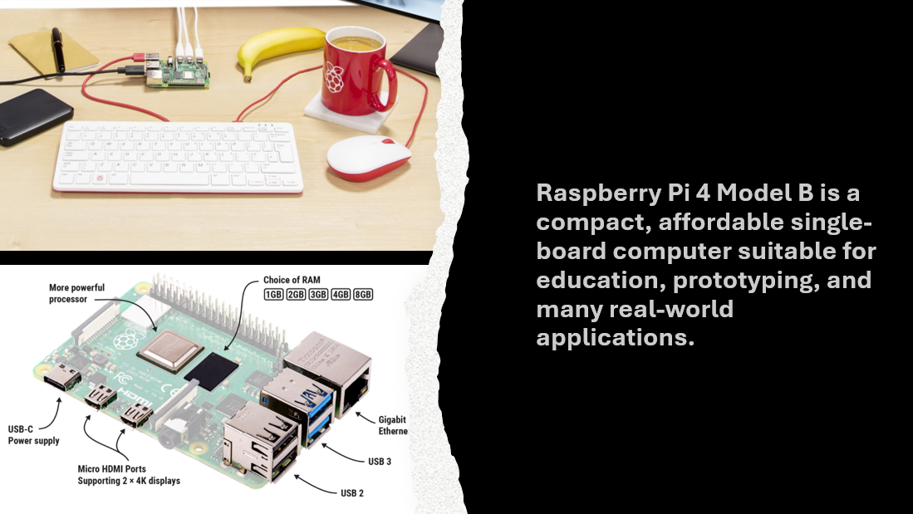

Raspberry Pi 4 Model B at CodeForward
May 15, 2026

What Is Raspberry Pi 4 Model B?
The Raspberry Pi 4 Model B is a small, affordable computer, about the size of a credit card. It can do many of the same things as a regular desktop computer. It was created to help people learn how computers work by building and experimenting, not just using apps.
At CodeForward, we use Raspberry Pi to help students learn technology in a hands-on, fun, and confidence-building way. This small but powerful computer allows students to move beyond screens and actively build, experiment, and create.
What Can Raspberry Pi 4 Model B Do?
Despite its small size, the Raspberry Pi 4 Model B is a powerful, fully functional computer that can:
Run real programs using Python, Scratch, and Linux
Control lights, buttons, and sensors through its GPIO pins
Collect data such as temperature, light, or motion
Connect to the internet using Wi-Fi and Bluetooth
Support camera and beginner-friendly AI projects
Power creative experiences like games, art, music, and interactive displays
What Does That Look Like in Our Programs?
One of the first projects students complete is lighting up a bulb using code and basic circuitry: they connect an LED into a breadboard and connect it to the Raspberry Pi. They are then able to program the breadboard (and the LED) through the numerous ports on the Raspberry Pi.
Through projects like this, students learn coding, electronics, and problem-solving by doing. They see that technology isn’t magic, but something they can understand, control, and create with.
What Does That Mean for Kids?
In kid-friendly terms, Raspberry Pi lets kids bring their ideas to life by:
Writing code that makes lights turn on and off
Creating games and animations they can play and share
Building smart projects that respond to buttons, motion, or sound
Using a camera to take pictures or recognize objects
Mixing coding with creativity through art and music
Learning by experimenting, fixing mistakes, and solving problems
Why Raspberry Pi?
Through Raspberry Pi–based projects, students learn coding, electronics, and problem-solving by doing, connecting components, writing programs, and watching their ideas come to life.
By using affordable, flexible tools like Raspberry Pi 4 Model B, CodeForward makes STEM learning accessible and inclusive, helping students build curiosity, confidence, and skills they can carry into the future.
References: